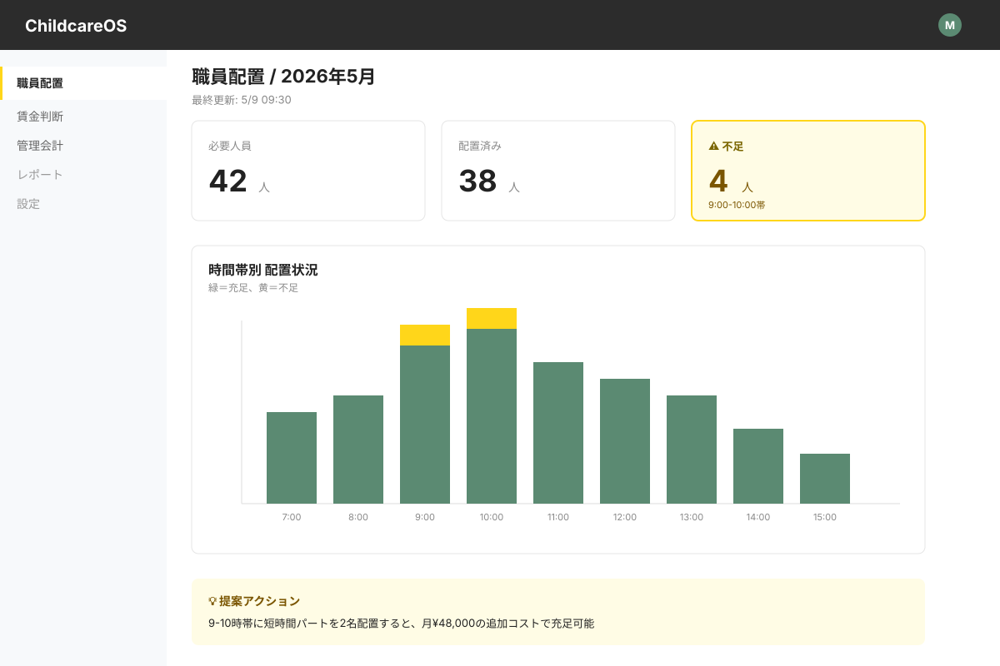
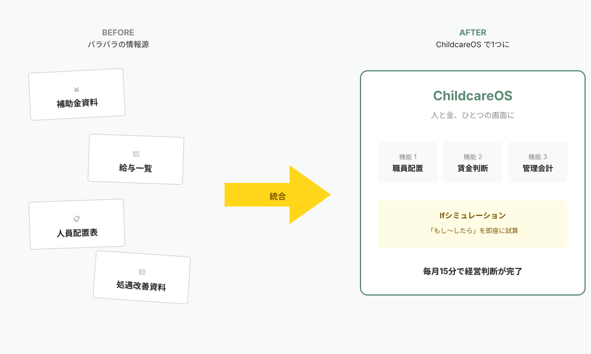
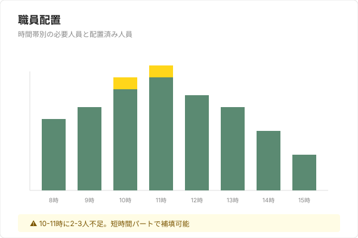
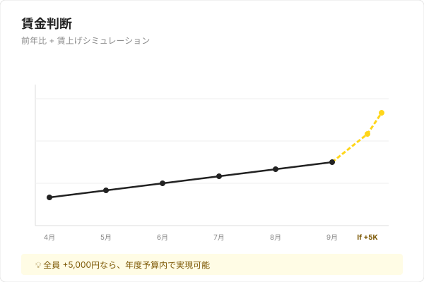
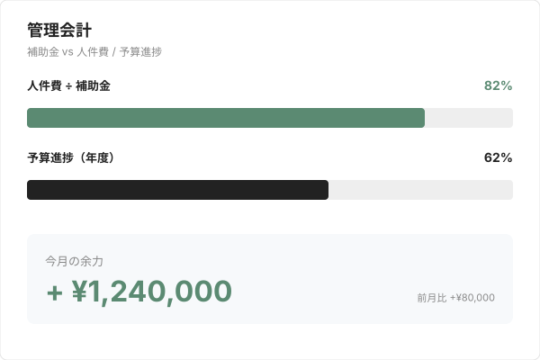

こんな悩み、ありませんか？
- 処遇改善加算や配置基準が複雑すぎて、判断の根拠を持てない
- 現場や役員に「なぜその判断か」を説明できない
- Excel作業には限界がある
- コンサルは高いし自らで判断したい
- でも“自分で判断する根拠”が持てない。
SOLUTION
人と金、ひとつの画面に。
バラバラだった情報を、ChildcareOSが1つに整理します。
毎月15分で、根拠ある経営判断ができます。

FEATURES
3つのダッシュボード
毎月15分で、経営判断を一巡できる。
-

職員配置
「どの時間帯が、何人足りないか」を数字で把握できます。
-

賃金判断
「全員＋○円しても大丈夫か？」をifで確認できます。
-

管理会計
「今月の余力」と「このまま進むとどうなるか」が見えます。
SIMULATION
3つのIfシミュレーション
「もし〜したら」の問いに、即座に数字で答えます。
── A保育園（定員90名・職員18名）の、来年度に向けて ──
- 📈 人事院勧告が +5.3%。人件費の原資が約450万円増えそう
- ⏰ 17〜18時は、毎日のように人手が足りない
- 👥 その人手不足で、本来取れるはずの加算も取りこぼしている
- 📉 少子化で、来年度は定員割れしそう
この状況で打てる手を、3つ数字で見てみましょう。
- もし増えた原資を、全員の賃上げに使ったら？
- もし人を雇ったら？（配置が安定し、取れていなかった加算も取れる）
- もし定員を実態に合わせて減らしたら？（定員割れなら増収のことも）
PRICING
シンプルな料金体系
-
スタンダード
¥30,000/園/月
定員20名以上の保育施設
-
スモール
¥20,000/園/月
定員19名以下（小規模保育事業）
※導入費別途。1園目20万円、2園目以降15万円。法人横断機能やデータ投入代行などのオプションもございます。
FAQ
よくある質問
- 導入までどれくらいかかりますか？
- 初回打ち合わせから2週間〜1ヶ月で利用開始できます。データ投入を代行することも可能です。
- 既存のSaaS（コドモン等）と連携できますか？
- CSV出力データの取り込みに対応しています。コドモン、保育士バンクコネクト等の主要SaaSに対応予定です。
- セキュリティ対策は？
- SSL通信、定期バックアップ、ロールベースの認証管理を実装しています。
- 無料トライアルはありますか？
- 初回打ち合わせ後、2週間の無料トライアル期間を設けています。
CONTACT
無料相談・お問い合わせ
サービス詳細、導入相談、デモのご依頼など、お気軽にどうぞ。